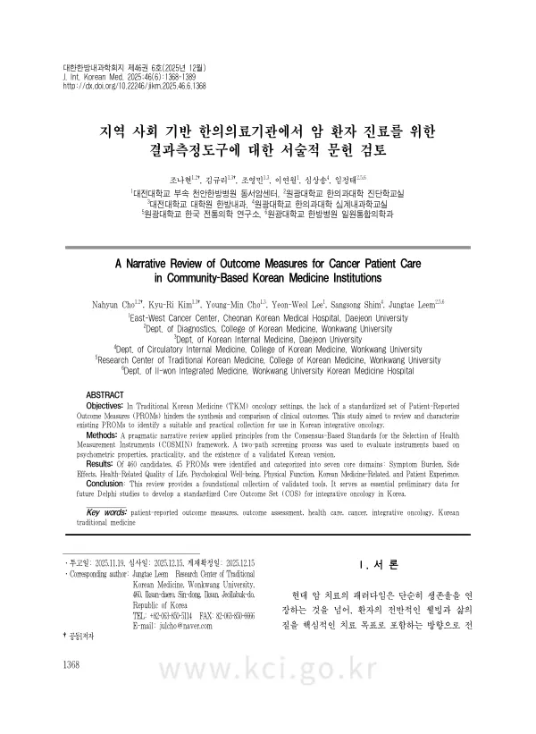

A Narrative Review of Outcome Measures for Cancer Patient Care in Community-Based Korean Medicine Institutions
Cho N, Kim KR, Cho YM, Lee YW, Shim S, Leem J
The Journal of Internal Korean Medicine 46(6):1368-1389

첫 장 · 오픈액세스First page · open access
논문 소개Summary
암 치료의 목표가 생존 기간에서 환자의 웰빙과 삶의 질로 옮겨 오면서 환자보고결과가 중심에 놓였습니다. 환자보고결과는 임상의의 관찰이나 생체지표로는 잡히지 않는 주관적 경험을 재는 유일한 직접 수단이고, 이를 정기적으로 활용하는 것이 삶의 질뿐 아니라 전체 생존율 개선과도 관련된다는 보고가 있습니다. 그러나 지역사회 한의 의료기관에는 표준화된 도구 세트가 없어 결과를 견주기 어렵습니다. 한 암 관련 문헌고찰에서는 서로 다른 변증 설문지가 열일곱 가지 넘게 쓰였다고 보고되기도 했습니다.
이 연구는 지역사회 한의 의료기관에서 암 환자에게 쓸 수 있는 도구를 골라 심리측정학적 특성과 실용성을 정리했습니다. 방법론의 기준으로 COSMIN 프레임워크를 쓰되, 완전한 체계적 문헌고찰은 이 목표에 과도하다고 보아 원칙만 차용한 서술적 검토로 설계했습니다. 심리측정학적 우수성만 따지면 정작 임상에서 쓸 수 없는 도구가 남기 때문입니다. 후보는 전문 데이터베이스와 국내 종양학 연구의 두 갈래로 모았습니다.
2025년 9월 15일 기준 460개를 찾아 238개를 스크리닝했고, 특정 암종 전용이거나 한국어판이 없는 도구 등을 제외해 45개를 남겼습니다. 이를 증상 부담, 치료 부작용과 이상반응, 건강관련 삶의 질, 심리적 웰빙, 신체 기능과 수행능력, 한의학 관련, 환자 경험의 일곱 도메인으로 나누었습니다.
정리의 요점은 문항 수와 작성 시간입니다. 제반 증상에서 ESAS-r은 10문항 평균 59초로 실행 가능성이 높고, MDASI는 13개 핵심 증상에 일상생활 지장 6개를 더해 증상이 실제 기능을 얼마나 방해하는지까지 잽니다. 삶의 질에서는 EORTC QLQ-C30이 30문항 1분 38초, FACT-G가 27문항 1분 27초, PROMIS-29가 29문항 5분 24초로 모두 문항이 많습니다. 반면 한의학 도메인의 BCQ와 CCMQ는 54문항과 61문항이어서 어느 하나만 넣어도 환자 부담이 급격히 늘어납니다.
작성 시간은 건강한 연구자 세 명이 잰 값이라 실제 환자보다 짧을 것이고 도구 사이의 상대 비교에만 써야 합니다. 서술적 검토라 도구 선택의 비뚤림을 완전히 배제하지 못하고, 암 특이 도구에 초점을 맞춘 탓에 범용 도구가 빠졌을 수 있습니다. 저자들은 기존 도구에서 핵심 개념만 뽑아 5문항에서 10문항 내외의 한의학 단축 모듈을 개발할 것을 제안하며, 델파이 합의로 핵심 결과지표 세트를 만드는 것이 다음 단계입니다.
As the goal of cancer care has shifted from survival time towards patient wellbeing and quality of life, patient-reported outcomes have moved to the centre. They are the only direct means of measuring subjective experience that neither clinician observation nor biomarkers can capture, and their routine use in cancer care has been associated with improvement not only in quality of life but in overall survival. The US Food and Drug Administration and the European Medicines Agency both encourage their inclusion as key endpoints in trials. Community-based Korean medicine institutions, however, have no standardised set. Instruments are chosen institution by institution, which makes results incomparable; one review of cancer-related studies reported more than seventeen different pattern-identification questionnaires in use.
This study reviewed instruments usable with cancer patients in community-based Korean medicine institutions, setting out their psychometric properties alongside their practicality. COSMIN served as the methodological reference, but a full ten-step systematic review was judged excessive for this practical aim, so the work was designed as a narrative review borrowing COSMIN's principles: judging instruments on psychometric excellence alone leaves a shortlist unusable in practice. Candidates were assembled along two paths, searching specialist databases such as PROQOLID and having two researchers independently sweep instruments common in Korean oncology research.
As of 15 September 2025, 460 instruments were retrieved; screening by intended purpose left 228, and 10 more selected by researcher agreement brought the pool to 238. After excluding instruments confined to a single cancer type or lacking a validation study or a Korean version, among others, 45 remained, sorted into seven domains: symptom burden, treatment side effects and adverse events, health-related quality of life, psychological wellbeing, physical function and performance status, Korean medicine, and patient experience.
Item count and completion time carry the analysis. For general symptom burden, the revised Edmonton Symptom Assessment System is highly feasible at 10 items and 59 seconds on average, with internal consistency of Cronbach's alpha 0.88, while the MD Anderson Symptom Inventory adds six interference items to its 13 core symptoms, thereby measuring how far symptoms obstruct daily function, with alpha from 0.91 to 0.93. Among quality-of-life instruments, the EORTC QLQ-C30 runs 30 items in 1 minute 38 seconds, FACT-G 27 items in 1 minute 27, and PROMIS-29 29 items in 5 minutes 24 — all comparatively long. The Hospital Anxiety and Depression Scale is short at 14 items and 32 seconds, and the Karnofsky and ECOG performance scales are single items requiring no licence. The Korean medicine instruments, by contrast, run to 54 and 61 items, so including either one sharply raises the total burden.
The completion times were measured by three healthy researchers and will be shorter than real patients', so they should serve only to compare instruments against one another. Being a narrative review, it cannot fully exclude bias in instrument selection, and its focus on cancer-specific instruments may have left out general measures such as the EQ-5D-5L. The authors propose extracting only the concepts essential to Korean medicine diagnosis and treatment evaluation from existing instruments and developing a short module of roughly five to ten items. Building a core outcome set through Delphi consensus on the basis of this list is the natural next step.
인용Cite
Cho N, Kim KR, Cho YM, Lee YW, Shim S, Leem J. A Narrative Review of Outcome Measures for Cancer Patient Care in Community-Based Korean Medicine Institutions. The Journal of Internal Korean Medicine. 2025;46(6):1368-1389. doi:10.22246/jikm.2025.46.6.1368